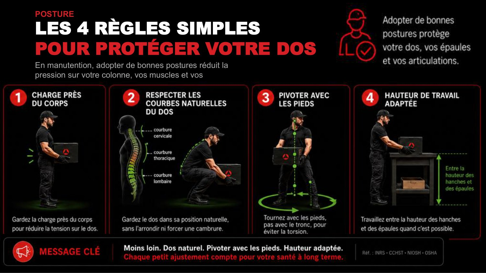
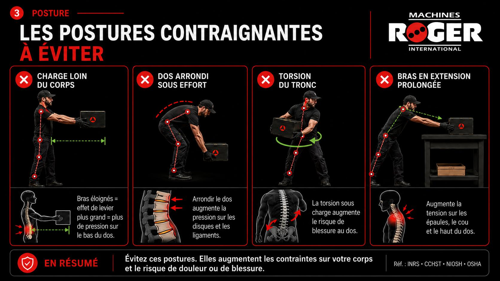
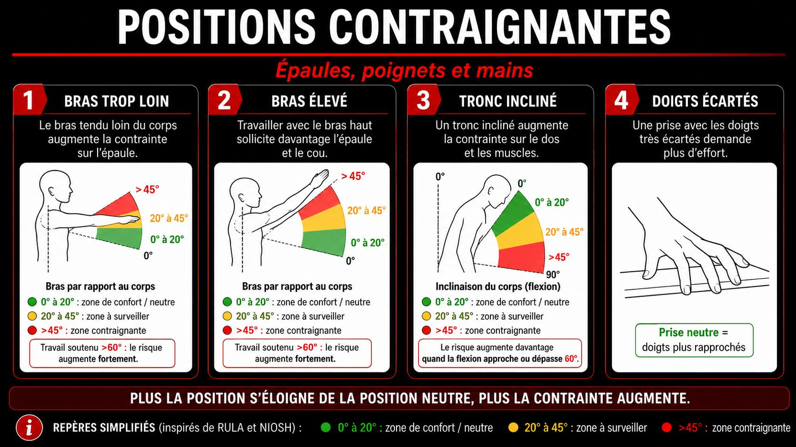

+

Low back pain
Pain in the lower back, the most common one.
DetailsA broken tool gets replaced. Your back, shoulders and knees have to last. Two clearly separate sections, depending on what you need:
All the topics at your own pace: types of MSDs, risk factors, sleep, good habits, with interactive exploration (clickable diagram, body map, workstation simulator).
Section 2 · Guided trainingA step-by-step path with quiz, score and certificate: perfect for new workers.
Musculoskeletal disorders are no small thing: they affect a big share of workers and weigh heavily, every year, on health and work.
Sources: CNESST, 2023 annual statistics · INSPQ
A musculoskeletal disorder (MSD) is damage to your muscles, tendons, nerves, ligaments or joints, caused or made worse by work. It's rarely the result of a single accident: it builds up gradually, when repeated movements, efforts and postures go beyond your body's ability to recover. It starts with simple discomfort and can end in a lasting injury, which is why it's so important to act early.
Pain in the lower back, the most common one.
Details
Inflammation of a tendon: shoulder, elbow, wrist.
Details
Inflammation of the bursae: knees, shoulders.
Details
Compression of the median nerve at the wrist.
DetailsClick a glowing dot or a label on the chart to see the affected area, the common MSDs, the factors behind them and the good habits.
For workers, the risk comes mainly from the task, the body and the immediate environment:
👆 Everything is clickable: the 3 families, each word inside the circles, the 10 chips around them, each one linked by a dotted line to its colour family.
An MSD doesn't have a single cause: effort, posture, repetition, fatigue and environment all add up.
Underground, several strains add up over a single shift. Check off the ones that affect your job to gauge the risk:
An MSD sets in by stages. The same injury goes from simple discomfort to nagging pain, then to a lasting injury. The longer the pain lasts, the longer recovery takes, which is why it matters to act right from the start.
It pulls or burns during effort, then eases off at rest. Local fatigue, stiffness at the end of the shift. This is where you need to act.
The pain comes back faster, lasts longer and sticks around even when you're not working. Your sleep and your output suffer.
The pain stays even at rest, the injury is set in: functional trouble, long and uncertain recovery.
The right time to act is as soon as the discomfort shows up (the acute phase, the green stage). The longer you wait, the more you slide toward pain and then injury. Chronic injuries are rare but have a poor outlook: past that stage, proper care becomes necessary.
An MSD shows up when the load placed on the body repeatedly goes beyond its ability to recover.
The same force can feel like a very different effort from one person to the next. The rating of perceived exertion (also called the Borg scale) helps you put a number on what your body feels, from 0 (no effort) to 10 (maximum effort).
When it's used over and over without recovery, the muscle wears out. Three consequences follow one after another:
The muscle needs blood to work. When the contraction is held, blood flow drops. Compare the two:


Good blood supply: oxygen and nutrients reach the muscle.
Reduced blood supply: less oxygen, fewer nutrients.
Starved of blood, the muscle runs short on oxygen and fuel. It contracts less well and tires out much faster, even for a moderate effort.
The constant tension and lack of blood flow wake up the muscle's pain sensors: it pulls, burns or throbs. It's the first warning sign.
With no circulation to flush them out, the waste from the effort (lactic acid, ions) builds up in the muscle. It keeps the fatigue and the tissue irritation going.
Small areas of the muscle stay knotted up and contracted. Tender to the touch, they can send pain elsewhere in the body (referred pain).
The muscle ends up staying clenched all the time, painful at the slightest touch. By this stage, rest alone isn't always enough to release it.
Ref.: Baillargeon et Patry, 2003; CCOHS; INRS.
Even when you're sitting, your muscles work statically to hold you in position. Sitting for a long time tires the body and increases the pressure on the discs in your lower back.
help bring water, nutrients and oxygen into the disc.
squeezes the disc and limits how much water, nutrients and oxygen get in.
Moving often helps protect the discs in your lower back.
Your body's number-one repair tool. While you sleep, your body repairs itself.
Muscles, tendons and joints rebuild themselves overnight.
Growth hormone, released in deep sleep, repairs your tissues.
Sleeping well lowers your sensitivity to pain.
Memory and focus get locked in. You stay alert.
Staying awake 17 to 19 hours straight hits your alertness as hard as a blood-alcohol level of 0.05.
Four everyday levers: water, food, movement and habits. Click for the details.
What you can put into practice starting tomorrow to protect your back, your shoulders and your joints.

EnlargeLoad close to your body, back in a natural position, pivot with your feet, work height adjusted.

EnlargeAvoid: load far from your body, rounded back, twisting your trunk, arms held out for a long time.

EnlargePast 45°, the position gets awkward: 0-20° comfortable, 20-45° to watch.
A cold muscle gets hurt more easily. 5 minutes of warm-up beats weeks off work.
Neck, shoulders, wrists, hips, knees: a few gentle rotations.
Light squats, lunges, lower-back stretches.
Start easy, let your body warm up before the heavy lifting.
Alternate between standing, crouching and moving. No posture is good for too long.
A few seconds to relax your muscles before they tense up.
When you can, change the movement to rest the areas you've been working.
A few targeted stretches through your shift keep your muscles loose.
A discomfort that keeps coming back isn't a weakness to hide. It's information to share fast.
Ten questions to check the essentials: what an MSD is, the risk factors, fatigue, sleep and good habits. No score is saved, it's just for you.
All of MSD prevention comes down to two pillars.
Good handling techniques, warm-up, micro-breaks, varying your postures and tasks, mechanical aids: asking for help isn't a weakness.
Regular sleep of 7 to 9 hours, hydration, food, movement: habits that help your body repair itself.
Your body is your number-one work tool. Take care of it today so it lasts your whole career.
Your body is your number-one work tool: this short video (2 min) shows how to maintain it day to day (sleep, physical activity, recovery) so you can better handle the demands of the job.
A few simple moves that protect your back, your shoulders and your joints, especially when you're sitting for a long stretch.
Keep the load right up against you, back in a natural position, and pivot with your feet rather than twisting your trunk.
Alternate between sitting, standing and moving. No position is good for too long, even the best one.
Stand up for a few seconds regularly: it gets your circulation going again and rehydrates the discs before they tense up.
A few targeted stretches through your shift keep your muscles loose and ease your lower back.
A cold muscle gets hurt faster: 5 minutes of loosening up beats weeks off work.
A discomfort that keeps coming back isn't a weakness to hide: caught early, an MSD gets sorted out fast. Talk to your supervisor about it.
You'll find all these habits in detail (the 4 rules, the postures to avoid, reporting) in the "Good habits at the workstation" part, further down the page.
Sitting at the controls for hours, your lower back takes it silently. Click each point to see the details.
The trunk barely moves anymore. Without changes in pressure, the disc no longer gets "pumped": water, nutrients and oxygen get in less (look back at the animated comparison in the section).
When you sit, your lower back loses its natural curve (the lumbar lordosis). The pressure spreads out poorly and loads the front of the discs more.
Compressed nonstop, the disc loses its water through your shift. Less hydrated, it absorbs the machine's shocks and vibrations less well.
The discs at the bottom of your spine, especially L4-L5, take the most pressure when you're sitting. Year after year, the wear adds up: that's disc degeneration.

Ref.: Kastelic, Kozinc et Sarabon, 2018; Billy, Lemieux et Chow, 2014.
Repeated muscle contractions create micro-injuries in your muscle and tendon fibres. These micro-injuries trigger an inflammatory response: that's often what you feel as discomfort. At this stage, the damage is still reversible, and it all comes down to recovery time.

Pick a scenario:
Recovery time decides whether your tissues adapt or break down · Docking et Cook, 2019. That's why acting as soon as there's discomfort, by letting your body recover, keeps the micro-injuries from building up toward pain and then injury.
Click a level: what it means at work and what to do show up right below.
You can keep up this pace for a long time.
Check off what matches your work situation. The gauge calculates a rough risk level, and shows the key message: checking off in several families at once drives the score up faster, because the factors multiply.